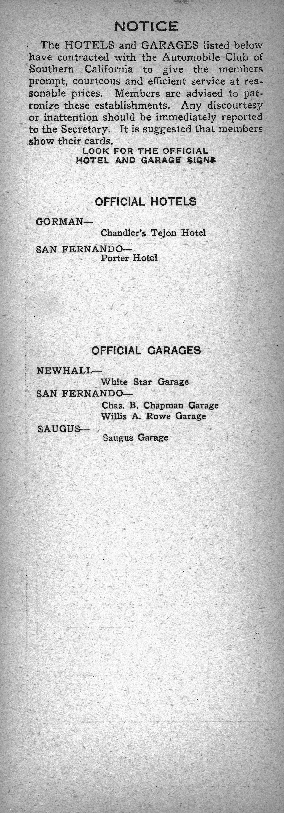

Hospice Care in Lake Hughes, California
Eternal Life Hospice provides physician-supported hospice care for eligible patients and families in Lake Hughes and surrounding communities. Care may be provided in private homes, assisted-living communities, residential-care settings and skilled-nursing facilities throughout Los Angeles County.
Hospice Care in Lake Hughes at a Glance
Eternal Life Hospice serves Lake Hughes families with Medicare-certified, physician-supported hospice care — at home, in assisted-living communities and in skilled-nursing facilities in North Los Angeles County.
Hospice care at home in Lake Hughes, California
Lake Hughes is a small rural community in the mountains of northern Los Angeles County between the Santa Clara River valley and the Antelope Valley. Its remote setting means families benefit greatly from a hospice provider who brings care directly to the home. Eternal Life Hospice provides coordinated hospice care — nursing, aide support, social work, chaplaincy and medication management — coordinated with facilities in Lancaster and Santa Clarita.
We also serve Lancaster, Palmdale, Santa Clarita and Castaic throughout North Los Angeles County, so families do not need to navigate multiple agencies.
Explore hospice care in Lancaster, Palmdale, Santa Clarita and Castaic. Or explore hospice care across our full service area.
At a glance
When to consider hospice
Hospice is appropriate when a patient and their physicians agree that comfort is the right priority. Common signs that a conversation with a hospice team may be timely include:
- Increased hospitalizations or emergency care visits
- Progressive functional decline despite ongoing treatment
- Growing need for daily personal care assistance
- Uncontrolled pain, breathlessness or other distressing symptoms
- Unexplained weight loss or reduced appetite
- Significant caregiver burden within the household
- A shift in goals toward comfort and quality of remaining time
Eligibility requires a clinical evaluation and physician certification. Call 805.953.7273 and we will guide you through the process clearly.
The First 48 Hours of Hospice Care
Review the First 48 Hours of Hospice Care for a complete walkthrough of what to expect when care begins.
The Eternal Standard
Care settings in Lake Hughes
Medicare hospice coverage
Most Medicare-covered hospice services have little to no out-of-pocket cost. Limited copayments may apply in specific circumstances. Coverage depends on eligibility, the terminal diagnosis and the individualized plan of care. Learn about Medicare hospice coverage.
Helpful resources for families in Lake Hughes
For physicians and care professionals in Lake Hughes
Physicians, discharge planners and care coordinators serving Lake Hughes and Antelope Valley and North Los Angeles County and nearby communities can refer an eligible patient for hospice evaluation through our professional pathway.
Refer a Hospice Patient →Common questions about hospice in Lake Hughes
Does Eternal Life Hospice serve Lake Hughes?
Yes. Lake Hughes is within our active service area. We provide hospice care at private residences, assisted-living communities, residential care homes and skilled-nursing facilities throughout the community and North Los Angeles County.
Does Medicare cover hospice in Lake Hughes?
Most Medicare-covered hospice services have little to no out-of-pocket cost for eligible patients. Limited copayments may apply in specific circumstances. Coverage depends on eligibility, terminal diagnosis and the individualized plan of care.
Can hospice care be provided at home in Lake Hughes?
Yes. Home is the most common care setting. Our nurses, aides, social workers and chaplains visit the patient at their residence. Medical equipment and medications related to the hospice diagnosis are coordinated and delivered as needed.
How quickly can hospice services begin in Lake Hughes?
Same-day evaluation may be available when clinically appropriate and operationally available. After a referral or intake call, a nurse will schedule an in-person visit to complete the clinical assessment and enrollment paperwork.
Who qualifies for hospice care in Lake Hughes?
Hospice is appropriate when a physician certifies that a patient has a terminal illness with a prognosis of six months or less if the illness follows its natural course, and the patient and family choose comfort-focused care over curative treatment.
Does Eternal Life Hospice work with skilled-nursing facilities in Lake Hughes?
Yes. We partner with skilled-nursing facilities in Lake Hughes to layer hospice services onto existing care. The patient remains in their current setting and our team coordinates directly with the facility staff.
Hospice Guidance for Families in Lake Hughes
A conversation costs nothing and brings clarity. We will guide you from there.